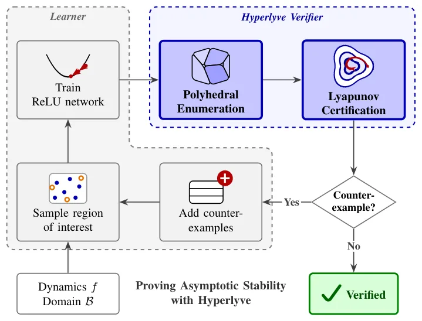
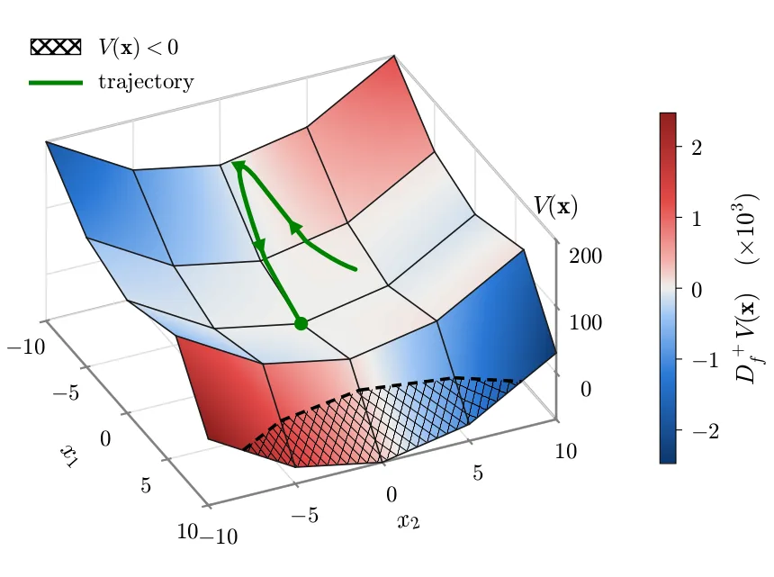
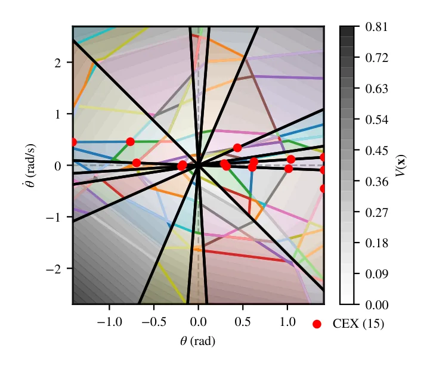

O problema da estabilidade em sistemas controlados por redes neurais
Sistemas ciber-físicos que utilizam redes neurais como controladores podem apresentar desempenho excepcional, mas também comportamentos inesperados e, em alguns casos, catastróficos. Para sistemas autônomos, incluindo aqueles que incorporam modelos de visão ou fundação no loop de controle, garantias clássicas de estabilidade permanecem como um componente essencial de uma abordagem em camadas para a segurança. Provar a estabilidade de um sistema em malha fechada com um controlador de rede neural é um problema bem estudado, particularmente através da análise de alcançabilidade.
No entanto, decidir a estabilidade assintótica de mesmo um sistema não linear simples é fortemente NP-difícil. A análise de estabilidade assintótica baseada em funções de Lyapunov é um pilar da teoria de controle. A existência de uma função de Lyapunov é suficiente para provar a estabilidade assintótica de um sistema dinâmico. Infelizmente, encontrar uma função de Lyapunov é uma tarefa não trivial, pois não existe um método universal aplicável a sistemas não lineares gerais.
Diante da dificuldade de derivar funções de Lyapunov à mão, um corpo crescente de trabalho aprende funções de Lyapunov neurais. Uma função de Lyapunov neural é geralmente construída implementando uma função de perda que penaliza violações das três condições de Lyapunov: zero no ponto de equilíbrio, definitividade positiva e diminuição ao longo de todas as trajetórias. Embora uma rede neural possa aprender a satisfazer as condições de Lyapunov para um conjunto de pontos amostrados dentro de um domínio de interesse, isso não garante que a rede satisfaça as condições em todo o espaço de estado contínuo.
Limitações das abordagens atuais de verificação
Portanto, aprender uma função de Lyapunov neural também requer um procedimento de verificação formal para certificar que as condições de estabilidade são válidas sobre todo o domínio de interesse. Trabalhos anteriores sobre a certificação da validade de uma função de Lyapunov neural incluem codificações SMT, SOS/SDP e MIP/MILP. Trabalhos recentes usam o verificador α, β-CROWN para acelerar a verificação de funções de Lyapunov neurais suaves por meio de propagação de limites e otimização branch-and-bound.
No entanto, a verificação completa branch-and-bound frequentemente se torna computacionalmente proibitiva para sistemas complexos e de alta dimensão. Decompor uma rede com ativações ReLU em um complexo poliédrico afim por partes (CPA) enumerando o arranjo de hiperplanos formado pelos padrões de ativação ReLU melhora a tratabilidade da verificação de funções de Lyapunov neurais não suaves.
Ferramentas como Reachable Polyhedral Marching (RPM) enumeram e computam conjuntos invariantes de controle a partir de regiões de ativação; no entanto, sua abordagem de programação linear depende de aproximações lineares por partes da dinâmica. Da mesma forma, trabalhos anteriores treinam e enumeram funções de Lyapunov neurais ReLU de camada única, mas também restringem sua análise a aproximações de dinâmica linear por partes. Além dessas limitações dinâmicas, os métodos existentes de enumeração de hiperplanos de redes ReLU lutam para paralelizar, permanecendo bloqueados por avaliações por neurônio ou achatamento da rede.

A abordagem Hyperlyve: Enumeração de Arranjos de Hiperplanos
Apresentamos o Hyperlyve (Hyperplane Partitioned Lyapunov Verification and Enumeration), um framework para provar a estabilidade assintótica de sistemas dinâmicos não lineares, incluindo aqueles com controladores de rede neural. O Hyperlyve aprende e certifica formalmente funções de Lyapunov neurais contínuas afins por partes (CPA) dentro de um loop de síntese indutiva guiada por contraexemplos (CEGIS). A inovação chave do Hyperlyve é um algoritmo paralelo que enumera o arranjo de hiperplanos formado pelas ativações ReLU de redes profundas e certifica que as condições de Lyapunov são satisfeitas dentro de cada região poliédrica.
Detalhes do Método: Testes Regionais e Paralelismo
O Hyperlyve deriva testes regionais sonoros e completos para verificar a estabilidade assintótica da dinâmica suave exata (em vez de uma aproximação linear por partes) dentro de um domínio compacto de interesse. Isso é crucial, pois aproximações lineares podem mascarar instabilidades sutis que ocorrem nas fronteiras das regiões de ativação ou em dinâmicas altamente não lineares.
A chave para a eficiência do Hyperlyve é a paralelização da enumeração. Enquanto abordagens anteriores assumem que as redes são genéricas, com no máximo p hiperplanos se intersectando por vértice em R^p, o Hyperlyve explora a estrutura geométrica específica dos arranjos de hiperplanos induzidos pelas ativações ReLU. Isso permite que o algoritmo divida a carga de trabalho de forma granular, verificando múltiplas regiões poliédricas simultaneamente sem a necessidade de GPU, utilizando apenas processadores de núcleo único ou múltiplos em arquiteturas padrão.
O Loop CEGIS no Hyperlyve
O processo opera em um ciclo iterativo. Inicialmente, um 'Learner' treina uma rede neural candidata V para atuar como função de Lyapunov, minimizando uma função de perda baseada nas condições de Lyapunov em estados amostrados do domínio B. Em seguida, a função candidata é passada para o verificador Hyperlyve.
O verificador não confia apenas nas amostras. Ele enumera exaustivamente as regiões poliédricas definidas pelas fronteiras de decisão da rede (hiperplanos ReLU). Dentro de cada região, a dinâmica da rede é linear por partes. O Hyperlyve aplica testes analíticos para garantir que as condições de Lyapunov (positividade e decaimento) sejam satisfeitas para todos os pontos em cada região poliédrica, não apenas nos pontos de treinamento.

Resultados Empíricos: Velocidade de Enumeração
Substanciamos empiricamente nossas afirmações comparando o Hyperlyve com o estado da arte (SOTA). Os benchmarks de enumeração mostram que o Hyperlyve computa a representação H (meios-espaços/facetadas) completa do complexo poliédrico induzido por redes ReLU mais de 150 vezes mais rápido que as ferramentas concorrentes RPM e Relucent.
Em testes com redes maiores, como o Rejoin RL, o Hyperlyve paraleliza a enumeração de 6,3 milhões de regiões 8-dimensionais em menos de 16 minutos. Em contraste, o RPM e o Relucent atingiram o limite de timeout de 1 hora. Para a rede TaxiNet, o Hyperlyve completou a enumeração em 77,6 segundos, enquanto as ferramentas concorrentes não conseguiram finalizar dentro do tempo limite. Para a rede Stanford Bunny, o Hyperlyve levou apenas 5,2 segundos, comparado a 97,2 e 71,5 segundos para RPM e Relucent, respectivamente.
Resultados Empíricos: Certificação de Estabilidade
Além da enumeração, o Hyperlyve certifica a estabilidade assintótica de sistemas dinâmicos mais rapidamente, com dimensões de entrada maiores e uma tolerância de origem mais rigorosa. Testamos o framework em uma variedade de sistemas não lineares, incluindo a dinâmica AKP (Ahmadi-Krstic-Parrilo), o sistema de Lorenz, e modelos epidêmicos SIS em rede.
Para a dinâmica AKP-10, com domínio B = [-10, 10]^2, o Hyperlyve foi capaz de certificar a estabilidade em 4,8 segundos. O RPM falhou com um erro (ERR) ao retornar um resultado incorreto para redes não genéricas, devido à interseção de muitas hiperplanos na origem. Isso destaca a robustez do Hyperlyve em lidar com casos degenerados que quebram outras ferramentas.

Aplicações em Sistemas Controlados por NN
O Hyperlyve também foi testado em sistemas controlados por redes neurais, onde a entrada de controle u é fornecida por um controlador neural com ativações tanh. Os sistemas incluíram o Pêndulo Invertido (IPNN) e o Braço Robótico Planar de Dois Elos (TLPRA).
Para o Pêndulo Invertido, com um controlador de 2 camadas e 6 neurônios, o Hyperlyve identificou contraexemplos e refinou a função de Lyapunov de forma eficiente. A capacidade de lidar com controladores não lineares acoplados a dinâmicas físicas complexas demonstra a versatilidade do framework. A enumeração precisa das regiões de ativação permite que o verificador analise o comportamento do controlador em cada setor do espaço de estado, garantindo que a estabilidade seja mantida mesmo quando o controlador muda de política de atuação.
Limitações e Trabalhos Futuros
Apesar dos avanços, o Hyperlyve não é uma bala de prata. A complexidade exponencial inerente à enumeração de arranjos de hiperplanos significa que, para redes extremamente profundas ou de alta dimensionalidade, o tempo de computação ainda pode crescer significativamente. Embora o paralelismo mitigue isso, o número de regiões poliédricas cresce exponencialmente com o número de neurônios ReLU.
Além disso, o método atual assume que o domínio de interesse é um hipercubo ou politopo simples. Trabalhos futuros explorarão o bounding de inputs do LiRPA e α,β-CROWN como politopos em vez dos hiperretângulos atuais, o que pode melhorar a precisão em domínios não retangulares. Outro caminho é o treinamento de controladores ótimos enquanto se usa o Hyperlyve para garantir estabilidade assintótica, integrando a verificação diretamente no processo de aprendizado.
Conclusão
Desenvolvemos um método novel para verificar funções de Lyapunov neurais profundas com ativações ReLU, aproveitando propriedades geométricas de arranjos de hiperplanos. Introduzimos e provamos a validade de três testes que podem ser usados para verificar cada condição de Lyapunov separadamente. Provas formais sobre a complexidade computacional do problema de verificação de função de Lyapunov neural foram fornecidas.
Introduzimos formalmente o Hyperlyve e derivamos sua complexidade temporal. Através de experimentos, ilustramos o speedup que o Hyperlyve fornece contra outros verificadores de funções de Lyapunov neurais state-of-the-art em termos de provar a estabilidade assintótica de um sistema em malha fechada. O Hyperlyve marca um passo significativo em direção à verificação exata e escalável de sistemas ciber-físicos controlados por IA.
O que fica
- Hyperlyve resolve o problema de verificar estabilidade assintótica exata em redes ReLU profundas, evitando aproximações lineares por partes.
- O método utiliza um loop CEGIS (Counterexample-Guided Inductive Synthesis) para aprender e verificar funções de Lyapunov continuamente.
- A enumeração paralela de regiões poliédricas é mais de 150 vezes mais rápida que ferramentas state-of-the-art como RPM e Relucent.
- O problema de verificação é formalmente caracterizado como co-NP-completo, preenchendo uma lacuna teórica na literatura.
Paper original: Hyperlyve: Parallelized Enumeration and Exact Lyapunov Stability Certification for Deep ReLU Networks
Comentários
Nenhum comentário ainda. Seja o primeiro.